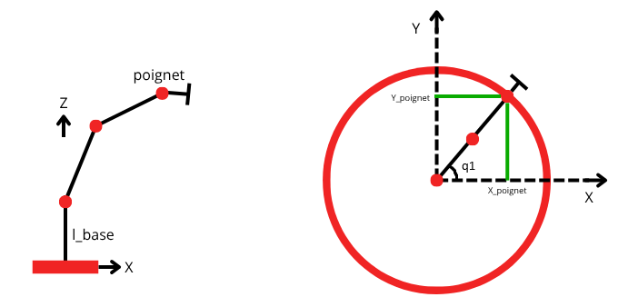
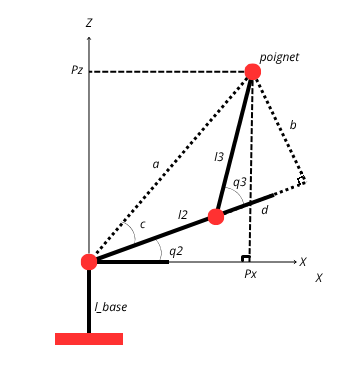

Résolution des modèles géométrique robot seriel
MGD et MGI en robotique :
En robotique, le Modèle Géométrique Direct (MGD) (ou Forward Kinematic en anglais) est utilisé pour déterminer la position et l’orientation de l’effecteur à partir des valeurs des articulations du robot. On note ces valeurs d'articulations qi, avec i le numéro de l'articulation.
$$ \mathbf{x} = f(\mathbf{q}) $$
À l’inverse, le Modèle Géométrique Inverse (MGI) (ou Inverse Kinematic en anglais) permet de calculer les valeurs articulaires nécessaires pour atteindre une position ou une orientation cible donnée.
$$ \mathbf{q} = f^{-1}(\mathbf{x}) $$
Le MGD est généralement simple et fournit une solution unique, tandis que le MGI peut posséder plusieurs solutions, parfois aucune, ou nécessiter des méthodes analytiques ou numériques lorsqu’une solution exacte n’est pas disponible.
MGD d'un robot sériel :
Le MGD d’un robot sériel consiste à déterminer la position et l’orientation de l’effecteur final à partir des valeurs de ses articulations. Pour cela, on calcule la matrice homogène résultant du produit des transformations de chaque articulation :
$$ ^0T_n = \prod_{i=1}^{n} \; ^{i-1}T_i $$
À partir de cette matrice, les coordonnées finales de l’effecteur s’obtiennent directement via la partie translation de la matrice de transformation homogène:
$$ \begin{bmatrix} X \\ Y \\ Z \end{bmatrix} = \text{translation}\left(^0T_n\right) $$
Il est ensuite souvent utile d’extraire l’orientation finale de l’outil. On identifie alors la matrice de rotation finale à la convention d’Euler ZYX pour déterminer les angles par rapport à la base.
Matrice de rotation standard selon la convention ZYX :
$$ R(\gamma,\beta,\alpha) = R_z(\gamma)\,R_y(\beta)\,R_x(\alpha) $$
\( R(\gamma, \beta, \alpha) = \begin{bmatrix} \cos\gamma \cos\beta & \cos\gamma \sin\beta \sin\alpha - \sin\gamma \cos\alpha & \cos\gamma \sin\beta \cos\alpha + \sin\gamma \sin\alpha \\ \sin\gamma \cos\beta & \sin\gamma \sin\beta \sin\alpha + \cos\gamma \cos\alpha & \sin\gamma \sin\beta \cos\alpha - \cos\gamma \sin\alpha \\ -\sin\beta & \cos\beta \sin\alpha & \cos\beta \cos\alpha \end{bmatrix} \)
Ainsi, en identifiant les éléments de la matrice de rotation
obtenue par le MGD, on peut extraire les angles d’Euler.
Plus précisément, si l’on note RZYX la matrice homogène finale :
$$ R_y(\beta) = \arcsin\!\left(-R_{ZYX}[3,1]\right) $$
Si l’on n’est pas proche d’une singularité (c’est-à-dire abs(cos(β)) > 1-1e-6), alors :
$$ R_x(\alpha) = \arctan2\!\left(R_{ZYX}[3,2],\, R_{ZYX}[3,3]\right) $$ $$ R_z(\gamma) = \arctan2\!\left(R_{ZYX}[2,1],\, R_{ZYX}[1,1]\right) $$
En revanche, si l’on est proche d’une configuration singulière (bras presque aligné), on utilise :
$$ R_z(\gamma) = \arctan2\!\left(-R_{ZYX}[1,2],\, R_{ZYX}[2,2]\right) $$ $$ R_x(\alpha) = 0 $$
Ainsi, l’orientation finale de l’effecteur est correctement reconstruite même en présence de configurations proches de la singularité.
On a aussi une autre solution pour chaque articulation du poignet valide. Les voicis en fonction de celle enoncées plus haut.
$$ R_y= π - R_y $$ $$ R_x = R_x + π $$ $$ R_z = R_z + π $$
code Exemple :
Code MGD sur Python
import numpy as np
import matplotlib.pyplot as plt
# -----------------------------
# MGD
# -----------------------------
q_i = np.array([np.pi/2,np.pi/4,np.pi/4,np.pi/4,np.pi/4,np.pi/4]) #valeur articulaires imposées
def rot_z(theta):
return np.array([
[np.cos(theta), -np.sin(theta), 0, 0],
[np.sin(theta), np.cos(theta), 0, 0],
[0, 0, 1, 0],
[0, 0, 0, 1]
])
def rot_y(theta):
return np.array([
[np.cos(theta), 0, np.sin(theta), 0],
[0, 1, 0, 0],
[-np.sin(theta), 0, np.cos(theta), 0],
[0, 0, 0, 1]
])
# Matrices de transformation homogènes pour chaque lien
T01 = rot_z(q_i[0]) @ np.array([
[1, 0, 0, 0],
[0, 1, 0, 0],
[0, 0, 1, 0.5],
[0, 0, 0, 1]
])
T12 = rot_y(q_i[1]) @ np.array([
[1, 0, 0, 0],
[0, 1, 0, 0],
[0, 0, 1, 0.5],
[0, 0, 0, 1]
])
T23 = rot_y(q_i[2]) @ np.array([
[1, 0, 0, 0],
[0, 1, 0, 0],
[0, 0, 1, 0.5],
[0, 0, 0, 1]
])
T34 = rot_z(q_i[3]) @ np.array([
[1, 0, 0, 0],
[0, 1, 0, 0],
[0, 0, 1, 0],
[0, 0, 0, 1]
])
T45 = rot_y(q_i[4]) @ np.array([
[1, 0, 0, 0],
[0, 1, 0, 0],
[0, 0, 1, 0],
[0, 0, 0, 1]
])
T56 = rot_z(q_i[5]) @ np.array([
[1, 0, 0, 0],
[0, 1, 0, 0],
[0, 0, 1, 0.5],
[0, 0, 0, 1]
])
# Transformation totale base → effecteur
T06 = T01 @ T12 @ T23 @ T34 @ T45 @ T56
M06 = T06[:3, :3]
# Position de l’effecteur
position_effecteur = T06[:3, 3]
# Extraction de la position et de la rotation finale ZYX
rota_y = np.arcsin(-M06[2,0])
if abs(np.cos(rota_y)) > 1e-6:
rota_x = np.arctan2(M06[2, 1], M06[2, 2])
rota_z = np.arctan2(M06[1, 0], M06[0, 0])
else:
# Cas singulier : θ ≈ 0 ou π
rota_z = np.arctan2(-M06[0, 1], M06[1, 1])
rota_x = 0.0
#autres solutions valide d'identification de ZYX
#q[4] = np.pi - q[4]
#q[3] = q[3] + np.pi
#q[5] = q[5] + np.pi
# Résultat final
print("Position et orientation (x, y, z, rx, ry, rz) =\n",
np.round([position_effecteur[0],position_effecteur[1],position_effecteur[2],rota_x,rota_y,rota_z], 3))
MGI d'un robot seriel à poignet
Le MGI d’un robot sériel consiste à déterminer les valeurs des articulations à partir de la position et de l’orientation de l’effecteur final dans l'espace. L’objectif est de résoudre l’équation :
$$ ^0T_n(q_1, q_2, ..., q_n) = [X,YZ,Rx,Ry,Rz]_\text{cible} $$
Pour les 3 premieres articulation q1,2,3 il sagit tout d'abord de positionner
le poignet du robot.
Pour cela on calcul la matrice equivalente de Rz, Ry et Rx
$$ R_{eq} = R_zR_yR_x $$
On calcule ensuite la position du poignet en fonction de l'effecteur final on calcul le vecteur entre le poignet et l'effecteur final:
$$ \vec{d}_{\text{outil-poignet}} = R_{eq} \cdot \begin{bmatrix} 0 \\ 0 \\ -l_{poignet-outil} \end{bmatrix} $$
Enfin, on détermine la position du coude dans la base du robot en ajoutant ce vecteur à la position cible de l'outil :
$$ \vec{P}_{\text{base-poignet}} = \vec{P}_{\text{outil}} + \vec{d}_{\text{outil-poignet}} $$
Toute ces opérations sont faite pour se faciliter la vie, ce en decoupant le robot en deux
parties simple à résoudre indépendament. Un MGI de robot 3 axes et une identification de matrice.
Par la suite on notera base-poignet : BP.
Calcul des angles articulaires qi
L’angle de la première articulation (rotation autour de l’axe Z vertical) est :
$$ q_1 = \arctan2\big( (\vec{P}_{\text{BP}})_y, (\vec{P}_{\text{BP}})_x \big) $$
Pour l’angle de q3, on utilise la loi des cosinus dans le triangle formé par les longueurs des segments du bras (\(l_1, l_2\)) et la distance au coude :
$$ q_3 = \arccos(\frac{(\vec{P}_{\text{BP}})_x^2 + (\vec{P}_{\text{BP}})_y^2 + ((\vec{P}_{\text{BP}})_z -l_{base})^2 - l_1^2 - l_2^2}{2 \, l_1 \, l_2}) $$
L’angle de q2 quand à lui :
$$ q_2 = \arctan2 \Big( \sqrt{ (\vec{P}_{\text{BP}})_x^2 + (\vec{P}_{\text{BP}})_y^2 }, \, ((\vec{P}_{\text{BP}})_z -l_{base}) \Big) - \arcsin \Big( \frac{\sin(q_3) \, l_2}{\sqrt{ (\vec{P}_{\text{BP}})_x^2 + (\vec{P}_{\text{BP}})_y^2 + ((\vec{P}_{\text{BP}})_z -l_{base})^2 }} \Big) $$
Preuve théorique de q2 et q3

Comme on le voit sur le schéma et grâce à Pythagore, on a :
\[ a^{2} = (l_{2} + d)^{2} + b^{2} \]
Or
\[ b = \sin(q_{3})\, l_{3}, \qquad d = \sin\left(\frac{\pi}{2} - q_{3}\right) l_{3} = \cos(q_{3})\, l_{3} \]
Donc, après simplification :
\[ a^{2} = l_{2}^{2} + l_{3}^{2} + 2 l_{2} l_{3}\cos(q_{3}) \]
D’où :
\[ q_{3} = \arccos\!\left(\frac{a^{2} - l_{2}^{2} - l_{3}^{2}}{2\, l_{2}\, l_{3}}\right) \]
Le schéma est en 2D, mais en réalité nous sommes en 3D, et on a :
\[ a = \sqrt{P_{x}^{2} + P_{y}^{2} + (P_{z} - l_{\text{base}})^{2}} \]
CQFD
Encore d’après le schéma (en 3D) :
\[ \tan(c + q_{2}) = \frac{P_{z}}{\sqrt{P_{x}^{2} + P_{y}^{2}}} \]
Donc : \[ q_{2} = atan2\!\left(P_{z}, \sqrt{P_{x}^{2} + P_{y}^{2}}\right) - c \]
Or d'après les assertions précedentes: \[ \sin(c) = \frac{b}{a} = \frac{\sin(q_{3})\, l_{3}} {\sqrt{P_{x}^{2} + P_{y}^{2} + (P_{z} - l_{\text{base}})^{2}}} \]
Ainsi, on retrouve la formule annoncée plus haut.
À noter que pour obtenir la solution où le coude est en haut, il suffit de changer le signe de l’arccos. En effet le \(q_{3}\) devient négatif. Cela se répercute aussi sur \(q_{2}\), mais il n'y a rien à modifier car les signes s'annulent.
On aurait en effet :
\[ \tan\big(q_2 - c\big) = A \]
À partir de \(\tan(q_2 - c) = A\) on obtient :
\[ q_2 - c = \operatorname{atan2}(A) \quad\Rightarrow\quad q_2 = \operatorname{atan2}(A) + c. \]
Pour passer à la solution « coude en haut » \(q_3\) devient négatif car on doit tourner dans l'autre sens : \[ q_3' = -q_3 \] (ou, plus généralement, on choisit l'autre valeur valable pour \(q_3\) issue de \(\arccos\)). Conséquence immédiate :
\[ c' = \arcsin\!\Big(\frac{\sin q_3' \; l_3}{\| \mathbf{\vec{d}_{\text{base-poignet}}} \|}\Big) = \arcsin\!\Big(\frac{\sin(-q_3) \; l_3}{\| \mathbf{d}_{\text{base-poignet}} \|}\Big) = \arcsin\!\Big(-\frac{\sin q_3 \; l_3}{\| \mathbf{d}_{\text{base-poignet}} \|}\Big). \]
Avec les propriété de l'arcsin (imparité), tant que l'argument est dans l'intervalle admissible et que l'on reste sur la valeur principale, on a \[ \arcsin(-x) = -\arcsin(x). \] Ainsi (sous l'hypothèse ci-dessus) : \[ c' = -\,c. \]
Ainsi on remplace \(c\) par \(c'=-c\) dans l'expression de \(q_2\) :
\[ q_2' = \operatorname{atan2}(A) + c' = \operatorname{atan2}(A) - c. \]
Matrices de rotation du bras
La rotation de la base jusqu’au coude s’obtient en multipliant les rotations autour des axes Z et Y :
$$ M_{\text{rotation_BP}} = R_z(q_1) \cdot R_y(q_2 + q_3) $$
Ensuite, la rotation relative entre le poignet et l’outil se calcule par :
$$ M_{\text{rotation poignet-outil}} = M_{\text{rotation_BP}}^\top \cdot R_{\text{eq}} $$
Pour les trois derniere valeurs d'articulation q4,5,6, on identifie la matrice de rotation finale selon la convention ZYZ :
$$ R_{ZYZ}(q_4, q_5, q_6) = M_{\text{rotation poignet-outil}} $$
$$ R_{ZYZ}(q_4, q_5, q_6) = \begin{bmatrix} \cos q_4 \cos q_5 \cos q_6 - \sin q_4 \sin q_6 & -\cos q_4 \cos q_5 \sin q_6 - \sin q_4 \cos q_6 & \cos q_4 \sin q_5 \\ \sin q_4 \cos q_5 \cos q_6 + \cos q_4 \sin q_6 & -\sin q_4 \cos q_5 \sin q_6 + \cos q_4 \cos q_6 & \sin q_4 \sin q_5 \\ -\sin q_5 \cos q_6 & \sin q_5 \sin q_6 & \cos q_5 \end{bmatrix} $$
À partir de cette matrice, les angles d’Euler ZYZ on obtient :
$$ q_5 = \arccos(R_{ZYZ}[3,3]) $$
Si abs(sin(q5)) > 1e-6 (hors singularité) :
$$ q_4 = \arctan2(R_{ZYZ}[2,3], R_{ZYZ}[1,3]) $$ $$ q_6 = \arctan2(R_{ZYZ}[3,2], -R_{ZYZ}[3,1]) $$
En revanche, si l’on est proche d’une singularité (q5 ≈ 0 ou π), on utilise une solution simplifiée pour éviter les indéterminations :
$$ q_4 = 0 $$ $$ q_6 = \arctan2(-R_{ZYZ}[1,2], R_{ZYZ}[1,1]) $$
Ainsi, même près d’une configuration singulière, l’orientation de l’outil est correctement reconstruite.
On a aussi une autre solution pour chaque articulation du poignet valide. Les voicis en fonction de celle enoncées plus haut.
$$ q_5 = - q_5 $$ $$ q_4 = q_4 + π $$ $$ q_6 = q_6 + π $$
code Exemple :
MGI sur Python
import numpy as np
import matplotlib.pyplot as plt
# -----------------------------
# MGI
# -----------------------------
position_3D = np.array([-0.25 , 1.207 , 0.604 , 2.101 ,-0.147 ,-2.612]) # position voulu [x, y, z, Rx, Ry, Rz]
q = np.zeros(6)
# taille des differents joint
lbase = 0.5
l1 = 0.5
l2 = 0.5
l3 = 0.5
# -----------------------------
# Calcul Matrice Equivalente
# -----------------------------
def rotation_matrix_X(angle):
c = np.cos(angle)
s = np.sin(angle)
R = np.array([
[1, 0, 0],
[0, c,-s],
[0, s, c]
])
return R
def rotation_matrix_Y(angle):
c = np.cos(angle)
s = np.sin(angle)
R = np.array([
[c , 0, s],
[0 , 1, 0],
[-s, 0, c]
])
return R
def rotation_matrix_Z(angle):
c = np.cos(angle)
s = np.sin(angle)
R = np.array([
[c,-s, 0],
[s, c, 0],
[0, 0, 1]
])
return R
R_x = rotation_matrix_X(position_3D[3])
R_y = rotation_matrix_Y(position_3D[4])
R_z = rotation_matrix_Z(position_3D[5])
M_total = R_z @ R_y @ R_x
# -------------------------------------------------
# Prise en compte du poignet pour simplification
# -------------------------------------------------
distance_outil_poignet = M_total @ np.array([0, 0, -l3]) # dans la base de l'effecteur final
distance_base_coude = position_3D[:3] + distance_outil_poignet
distance_base_coude[2] -= lbase
q[0] = np.arctan2(distance_base_coude[1], distance_base_coude[0])
val = (distance_base_coude[0]**2 + distance_base_coude[1]**2 +distance_base_coude[2]**2 - l1**2 - l2**2) / (2 * l1 * l2)
val = np.clip(val, -1.0, 1.0) # pour eviter les petite erreurs -- abs(val) > 1
q[2] = np.arccos(val)
#q[2] = -np.arccos(val) # autre solution
#/!\ le sens du arctan2 n'est pas le même en raison des convention d'angle de Python
# En effet l'angle est positif de Z à X et non l'inverse comme normalement
#d'ou l'inversion
q[1] = np.arctan2( np.sqrt(distance_base_coude[0]**2 + distance_base_coude[1]**2),distance_base_coude[2]) -np.arcsin((np.sin(q[2])*l2/np.sqrt(distance_base_coude[2]**2 + distance_base_coude[1]**2 + distance_base_coude[0]**2)))
M_rotation_base_coude = rotation_matrix_Z(q[0]) @ rotation_matrix_Y(q[1]+q[2])
M_rotation_coude_outil = M_rotation_base_coude.T @ M_total
# -----------------------------
# Identification matrice ZYZ
# -----------------------------
q[4] = np.arccos(M_rotation_coude_outil[2,2])
if np.abs(np.sin(q[4])) > 1e-6:
q[3] = np.arctan2(M_rotation_coude_outil[1,2], M_rotation_coude_outil[0,2])
q[5] = np.arctan2(M_rotation_coude_outil[2,1], -M_rotation_coude_outil[2,0])
else:
q[3] = np.arctan2(M_rotation_coude_outil[0,1], M_rotation_coude_outil[0,0])
q[5] = 0.0
#autres solutions valide d'identification de ZYZ
#q[4] = -q[4]
#q[3] = q[3] + np.pi
#q[5] = q[5] + np.pi
print("angles (q1..q6) en radians:")
print(np.round(q[:6],2))